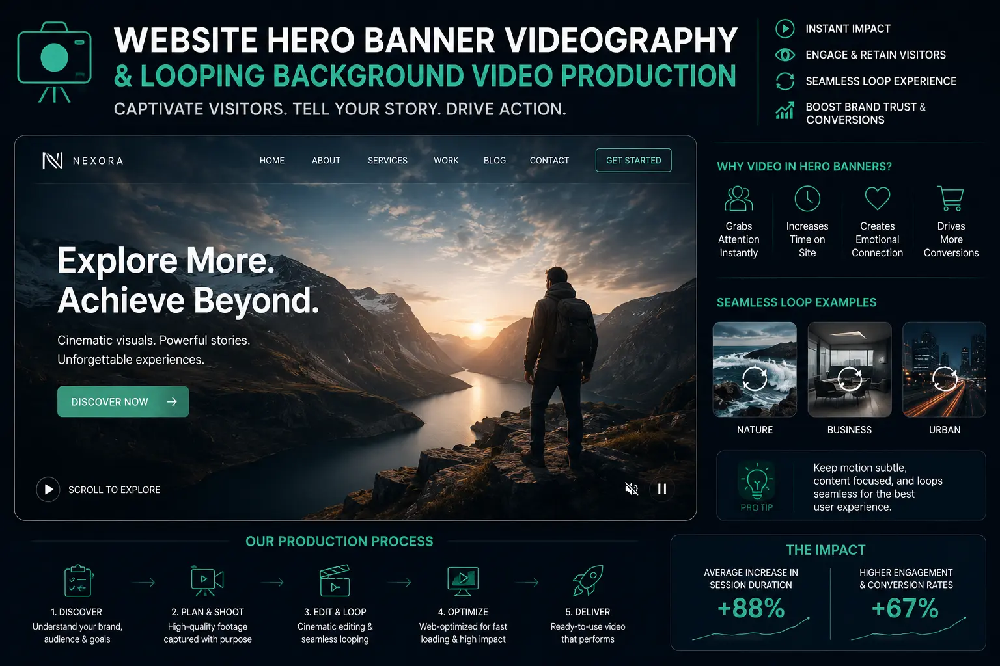
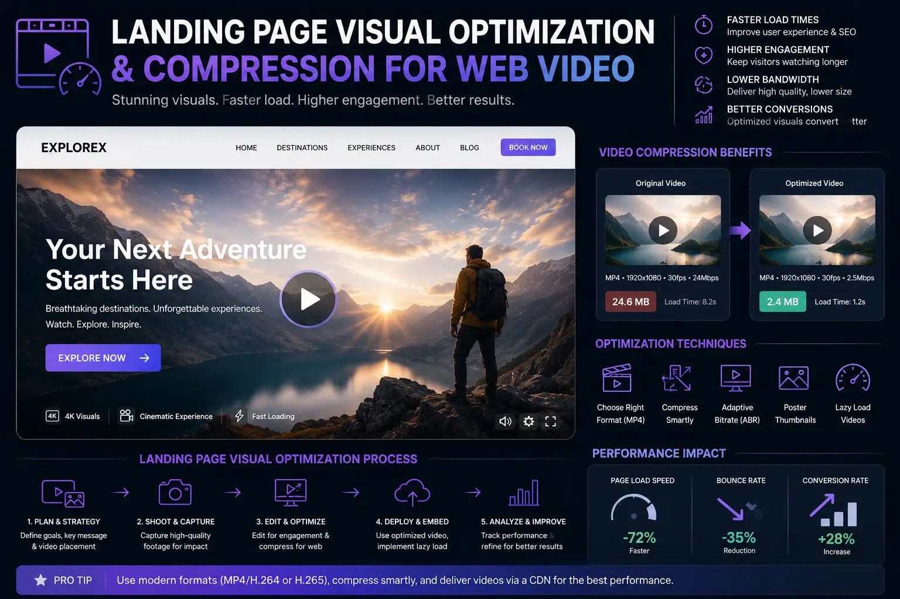

Optimizing Website Header Videography and Micro-Loops for Instant Session Duration Boosts
The First Three Seconds Decide Everything
When a visitor lands on your website, you have approximately three seconds before they make a subconscious decision: stay or leave. In that three-second window, the visitor is not reading your headline, scanning your menu, or evaluating your value proposition — they are processing a visual impression. The above-the-fold visual environment — the colours, the movement, the spatial composition, the perceived quality — determines whether the visitor's brain registers "professional, relevant, worth exploring" or "generic, outdated, not for me."
This is why Website Hero Banner Videography has become one of the highest-ROI investments in web design. A carefully produced header video — a seamless, atmospheric micro-loop that communicates brand identity, product quality, and professional credibility through motion — transforms the first impression from a static moment into a dynamic experience that naturally extends session duration, reduces bounce rate, and increases the probability of conversion.
But producing header videos that actually improve performance — rather than slowing page load, creating visual noise, or distracting from the call-to-action — requires a specific production and optimisation discipline. This is the domain of Website & Catalog Visual Production: creating Moving website headers that are visually compelling, technically optimised, and conversion-aligned.
The Anatomy of an Effective Header Micro-Loop
An effective website header video is not a shortened version of a brand film or a repurposed social media clip — it is a purpose-built micro-loop designed specifically for the technical and behavioural context of web browsing. Looping background video production follows specific creative and technical principles:
- Seamless loop construction. The video must loop without a visible cut, jump, or flash — creating a continuous, perpetual-motion impression. This requires planning the loop during filming: capturing motion that begins and ends in the same position (a rotating product, a flowing fabric, a slowly shifting light) or using post-production techniques (cross-dissolve blending, motion matching) to create invisible loop points.
- Atmospheric motion, not narrative. Header videos should contain gentle, atmospheric motion — slow camera pans, drifting light, subtle product interaction, environmental textures — rather than narrative sequences with beginnings, middles, and ends. Narrative content demands attention and cognitive processing; atmospheric motion creates mood and holds visual interest without competing with the page's text content and calls-to-action.
- Brand-communicative in every frame. Because the video loops continuously, every single frame must communicate brand identity — colour palette, product quality, professional credibility, category context. There is no "setup" frame or "transition" frame that the viewer can skip; every moment is a brand impression.
- Designed for text overlay. Header videos always sit behind headline text, sub-headlines, and CTA buttons. The video must be produced with this layering in mind — avoiding high-contrast areas, busy patterns, or bright elements in the regions where text will be positioned. A semi-transparent overlay (dark gradient, frosted glass effect) is typically applied in CSS to ensure text readability over the video.
Session Duration Impact
Landing Page Visual Optimization with header videos increases average session duration by 20-40% — visitors subconsciously stay longer on pages with atmospheric motion that rewards visual attention.
Conversion Uplift
Conversion rate optimization visuals including header videos and product micro-loops produce measurable conversion rate improvements — communicating product quality and brand credibility faster than any text-based element.
Dynamic Storefront Experience
Dynamic web storefront design uses header videos, product hover loops, and category section backgrounds to create a browsing experience that feels alive, premium, and worthy of exploration.
E-commerce Visual Strategy
An e-commerce landing page video showcasing the hero product in atmospheric motion captures immediate visual attention and contextualises the product in a premium environmental setting.

Technical Optimisation: Compression, Delivery, and Performance
The technical execution of header videos determines whether they improve or destroy page performance. An unoptimised header video — too large, too high-resolution, or improperly encoded — will increase page load time, trigger mobile data warnings, and cause layout shifts that directly harm Core Web Vitals scores and SEO rankings. Mastering compression for web video is non-negotiable:
- Target file sizes. Desktop header videos should be compressed to under 8-10MB maximum; mobile versions should be under 3-5MB. For hero sections that load above the fold, smaller is always better — every additional megabyte adds loading time that erodes the session duration benefit the video is intended to create.
-
Codec and format selection. Encode in H.264 MP4 for universal browser compatibility. For progressive enhancement, provide a WebM (VP9 or AV1) version that modern browsers can use for 30-50% better compression at equivalent visual quality. Use the HTML5
<video>element with<source>tags listing WebM first and MP4 as fallback. -
Resolution strategy. Serve different resolutions for different devices: 1920×1080 for desktop, 1280×720 for tablets, and 720×1280 (vertical) or 720×480 for mobile. Use JavaScript or
<source>media queries to load the appropriate file based on viewport width — preventing mobile devices from downloading desktop-resolution files. - Lazy loading and poster frames. Display a high-quality JPEG or WebP poster image immediately while the video loads in the background. This ensures the above-the-fold area is visually complete on first paint, then transitions to motion as the video becomes available — maintaining fast Largest Contentful Paint (LCP) scores.
-
Autoplay attributes. Apply
autoplay,muted,loop, andplaysinlineattributes to the video element. All four are required for auto-playing video to work across browsers without user interaction. Themutedattribute is mandatory — browsers block autoplay of unmuted video.
Production Workflows for Different Website Sections
Website & Catalog Visual Production extends beyond the homepage header — optimised video micro-loops can be deployed across multiple page sections to create a cohesive, dynamic browsing experience:
Homepage Hero Section
- Film a 10-15 second seamless loop that communicates brand identity, product category, and quality positioning — Moving website headers that set the visual tone for the entire site.
- Use slow, deliberate camera motion — dolly, crane, or gimbal movements — that create cinematic atmosphere without visual chaos.
- Position visual interest in the lower third and edges of the frame, keeping the centre and upper regions clean for headline text overlay.
- Produce seasonal or campaign-specific header variations that can be rotated to keep the homepage feeling fresh and current.
Product Category Pages
- Film short (5-8 second) micro-loops for each product category banner — showing representative products in atmospheric, lifestyle-adjacent motion.
- Create e-commerce landing page video backgrounds that contextualise the category — fabric flowing for apparel, ingredients being prepared for food, tools being used for hardware.
- Maintain visual consistency across all category videos — same lighting character, colour grade, and motion pacing — to create a cohesive dynamic web storefront design.
- Compress aggressively for category pages where multiple videos may load as the user navigates — individual files should be under 3MB.
Product Detail Pages
- Replace or supplement static product hero images with 360-degree rotation loops or product-in-use micro-clips.
- Film product interaction sequences — hands touching fabric, rotating a watch, opening packaging — as 5-second loops that communicate material quality and product detail.
- Apply conversion rate optimization visuals principles: the video should reinforce the purchase decision by showing the product's tactile, dimensional, and material qualities that static images cannot convey.
- Position the video adjacent to (not obscuring) the Add to Cart button and price — supporting rather than competing with the conversion action.
Measuring Impact: Session Duration and Conversion Metrics
Landing Page Visual Optimization with header videos must be measured and validated with data — not assumed to be beneficial. The key metrics to track after deploying header videos:
- Average session duration. Compare session duration for pages with and without header videos using A/B testing or before/after analysis. Target a 20-40% increase.
- Bounce rate. Monitor bounce rate changes — properly optimised header videos should reduce bounce rate by 15-25% by creating immediate visual engagement that holds visitor attention.
- Core Web Vitals. Monitor LCP, CLS, and FID/INP scores to ensure the video implementation is not degrading page performance. An improperly implemented video that hurts Core Web Vitals will lose more traffic through SEO ranking decline than it gains through session duration improvement.
- Conversion rate. Track whether the improved session duration translates to higher conversion rates — more add-to-carts, more enquiry form submissions, more quote requests. Session duration without conversion improvement indicates engagement without intent.

Conclusion
Website Hero Banner Videography and micro-loop production represent one of the highest-ROI investments in Website & Catalog Visual Production. By replacing static header images with purpose-built, seamlessly looping atmospheric videos, brands create dynamic first impressions that extend session duration, reduce bounce rates, and communicate quality and credibility faster than any text-based element.
The technical execution — compression for web video, responsive resolution delivery, poster frame implementation, and Core Web Vitals monitoring — ensures that Moving website headers improve performance without degrading page speed. Applied across homepage heroes, category banners, and product detail pages, looping background video production creates the dynamic web storefront design that modern consumers expect from premium brands.
At The PhD Ads, we produce Website Hero Banner Videography and e-commerce landing page video content for Indian brands — from filming atmospheric micro-loops through technical compression to deployment and Landing Page Visual Optimization that delivers measurable conversion rate optimization visuals.
Key Topics
Transform Your Website with Dynamic Header Videography
At The PhD Ads, we produce website header videos and micro-loops — filmed, compressed, and deployed to boost session duration, reduce bounce rates, and create premium dynamic web experiences.
Email: team@e2o.in